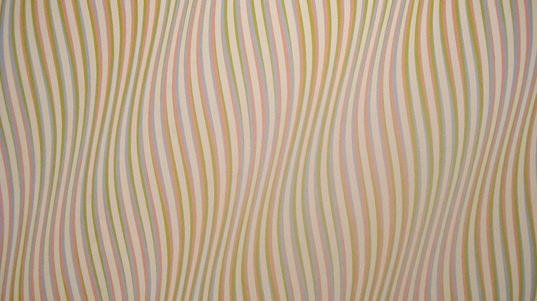

minimal

Bridget Riley
https://matome.naver.jp/odai/2135339194256778101-どんな人
オプアート(錯視を利用して不思議な視覚効果を与えることを目的とした芸術作品)でメジャーな人です。白黒だけをつかって錯視を全面に押し出した作品もあれば、カラフルな配色の作品も多く作っています。
-解説
波うっている線が特徴的な作品です。ピンクと水色、緑の線が微妙にずれながら重なることで、うねうねしているような動きを感じる模様を作っています。マウスで画像を上下にスクロールしてみるともっとうねうねします。実物で見た場合、作品は壁にかかっていて動かすことはできませんが、鑑賞者が視点を動かしながら、また歩きながら見ることでうねうねします。オプアートは鑑賞者が動くことを利用して、静止画でも動いているように見える作品が多くあります。
-好きなところ
錯視を利用しているのでデザインに利用できる場面は限られそうですが、違う色の波線をずらしながら配置する方法は、かなり目を引く模様をつくることができると思います。